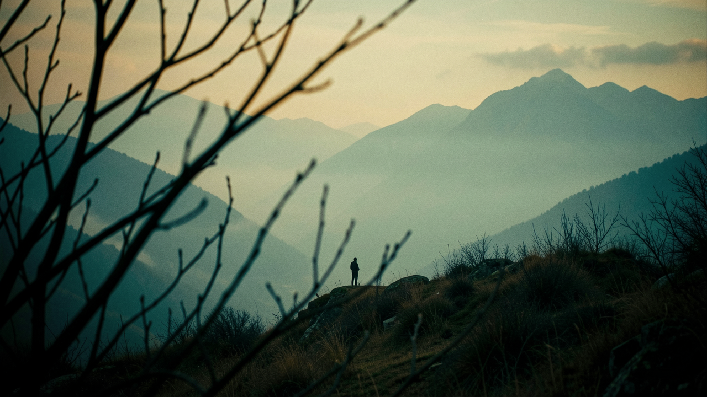

🧱 Regla de las tres capas
La profundidad es la ilusión de espacio tridimensional. Se crea organizando el cuadro en tres capas — y todo cuadro cARCKHÉtográfico tiene las tres.
Primer plano
Dónde está el espectador.
Plano medio
Dónde está el sujeto.
Fondo
Dónde vive el contexto.
🔀 Separación de capas
Tener tres capas no basta: tienen que estar visualmente distintas. La separación se logra con el foco, la luz y el color. El contraste y la contraluz separan el espacio; la niebla y la bruma empujan los elementos hacia la distancia.

🎯 Profundidad de campo
La profundidad de campo controla lo que está nÃtido — y lo nÃtido es hacia donde va la mirada. Es una forma silenciosa y poderosa de guiar la atención.
🔵 Enfoque superficial
- →AÃsla al sujeto, difumina el fondo (bokeh).
- →Intimidad y atención concentrada.
🔲 Enfoque profundo
- →Todo nÃtido, desde el primer plano hasta el fondo.
- →Aporta contexto y relación entre capas.
🔠Lente: gran angular vs. teleobjetivo
La elección de la lente moldea la sensación de profundidad. El gran angular expande el espacio; el teleobjetivo comprime el espacio. Es una decisión emocional, no solo técnica.
🌠Gran angular → expande
- →Capas alejadas, sensación de amplitud
- →Inmersión y escala del entorno
- →Las distancias parecen mayores
🔬 Teleobjetivo → comprime
- →Capas «apiladas», planos pegados
- →Intimidad y aislamiento del sujeto
- →Las distancias parecen menores
💡 Consejo práctico
En el prompt, declara explÃcitamente la lente: "wide-angle lens" para ampliar el escenario, "telephoto lens" para comprimirlo y acercarlo emocionalmente.
🌀 Movimiento y paralaje
El movimiento revela profundidad a medida que las capas se desplazan a diferentes velocidades — eso es la paralaje. El tracking y el orbit realzan este efecto de forma natural.
🌀 Velocidades por capa
Capas separadas + cámara en movimiento = profundidad real. Sin separación, la paralaje no aparece y el movimiento revela una escena plana.
â¤ï¸ Profundidad = emoción
La profundidad no es solo visual: es emocional. Los personajes ubicados en diferentes capas muestran relaciones sin una palabra de diálogo.
🧠Enfoque profesional
Un plano cARCKHÉtográfico combina composición, cámara y lente, iluminación, movimiento y posición de los personajes: todos trabajan como un sistema único.
Dejas de crear solo imágenes y pasas a dirigir escenas: dando forma al espacio, controlando la atención y contando historias a través de la profundidad.
📠Tarea — Narrativa mediante la profundidad
Crea 3 escenas cARCKHÉtográficas, cada una con un plano:
- 🧱Incluye primer plano, plano medio y fondo.
- 💡Usa iluminación y movimiento de cámara.
- ðŸŽAgrega 2 personajes en capas diferentes y muestra la emoción solo mediante la posición y la mirada.
- 🚫Sin diálogo · sin acción: enfócate en la atmósfera y la narrativa visual.
📌 Resumen del módulo
Próximo módulo:
4.4 — Tamaños de Plano y Movimiento de Cámara